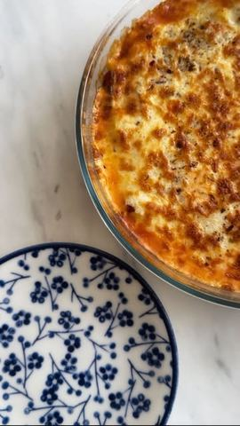

Moja beleška
SačuvanoAko vam treba ideja za ručak, evo jednog preukusnog predloga koji miriše na dom. Topao, sočan i pun ukusa. 🍽️
Sastojci
Priprema
Na malo maslinovog ulja prodinstajte glavicu crnog luka i jedan čen belog, sitno seckanih, da puste svoje sokove. Dodajte 300 g mlevenog junećeg mesa i sve zajedno dinstajte 10–15 minuta. Zatim sipajte 250 ml paradajz sosa i dodajte 2 kašike paradajz paste. Začinite: malo soli, bibera, origana, bosiljka i 1/2 kašičice šećera. Ostavite da se krčka narednih 40 minuta na tihoj vatri. Na tihoj vatri otopite puter, dodajte brašno i žicom mešajte dok ne zapeni. Polako dolivajte mleko, stalno mešajući, dok se ne zgusne. Redom ređajte: bolonjeze sos, krompiriće, bešamel, pa 200 g rendane mocarele. Po želji dodatno začinite i zapecite u unapred zagrejanoj rerni na 200 °C, dok se fino ne poveže i zarumeni. Nadam se da ćete uživati u videu. Ako isprobate – pišite mi utiske. 💛
Originalni opis sa Instagrama
Ako vam treba ideja za ručak, evo jednog preukusnog predloga koji miriše na dom. Topao, sočan i pun ukusa. 🍽️ 🔸 Bolonjeze sos: Na malo maslinovog ulja prodinstajte glavicu crnog luka i jedan čen belog, sitno seckanih, da puste svoje sokove. Dodajte 300 g mlevenog junećeg mesa i sve zajedno dinstajte 10–15 minuta. Zatim sipajte 250 ml paradajz sosa i dodajte 2 kašike paradajz paste. Začinite: malo soli, bibera, origana, bosiljka i 1/2 kašičice šećera. Ostavite da se krčka narednih 40 minuta na tihoj vatri. 🔸 Bešamel sos: 50 g putera, 25 g mekog brašna, 400 ml mleka, so i biber po ukusu. Na tihoj vatri otopite puter, dodajte brašno i žicom mešajte dok ne zapeni. Polako dolivajte mleko, stalno mešajući, dok se ne zgusne. 🔸 Dodatno: 6–7 srednjih krompira, sitno seckanih i proprženih (ili pečenih u rerni). Ja sam ih samo blago posolila. 🔸 Slaganje: Redom ređajte: bolonjeze sos, krompiriće, bešamel, pa 200 g rendane mocarele. Po želji dodatno začinite i zapecite u unapred zagrejanoj rerni na 200 °C, dok se fino ne poveže i zarumeni. Nadam se da ćete uživati u videu. Ako isprobate – pišite mi utiske. 💛 • • • #rucak #idejazarucak #ukusnahrana #recepti